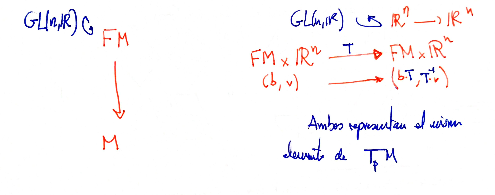
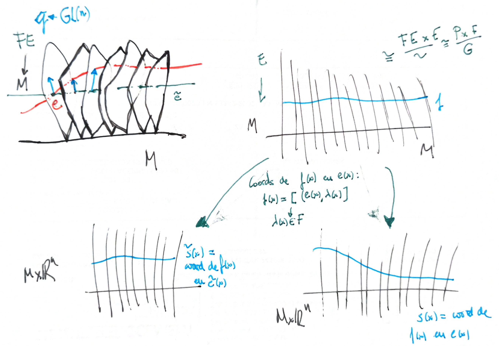

Associated bundles
In general, we have the following idea: if we have a fiber bundle $E \mapsto M$ with any typical fibre (say $F$), we have $G$-valued functions satisfying the cocycle condition for the overlaps of the trivializations. The fibre itself is not so important because the important informations is in these functions, and given any space $F'$ over which the group $G$ acts in a nice way, we can construct a new bundle with fibre $F'$ with the information given by the transition functions. This new bundle has the same gist that the old one. Example: the Mobius strip with fibre the real line (the group is $GL(1)$) or the interval $[-1,1]$ (the group is $\mathbb{Z}_2$).
Associated bundle to a principal bundle.
For every principal bundle $\xi = P \stackrel { \pi } { \longrightarrow } M$ with group $G$, one can define associated bundles if there is a left action of the group $G$ over a new space $F$.
We take the space $P\times F$ with an action:
$$ (p,f)\cdot g=(p\cdot g, g^{-1}\cdot f) $$If we take the orbits as equivalence class we obtain a new space
$$ E=P\times_G F :=(P\times F )/G $$that has, again, a projection map over $M$:
$$ \tilde{\pi}: [p,f]\longrightarrow \pi (p) $$Moreover, the fibers $\tilde{\pi}^{-1}(m)$ are isomorphic to $F$. To see it, think that $[p\cdot g,f]=[p,g\cdot f]$.
In short:

Important case: the frame bundle
Is important to remake an special case: if we have the principal bundle of frames of $TM$, the frame bundle, with group $GL(\mathbb{R}^n)$, the associated bundle if we take $F=\mathbb{R}^n$ is, of course, $TM$:


If we had a principal connection on a principal bundle, the associated bundle inherits an associated connection.
________________________________________
________________________________________
________________________________________
Author of the notes: Antonio J. Pan-Collantes
INDEX: